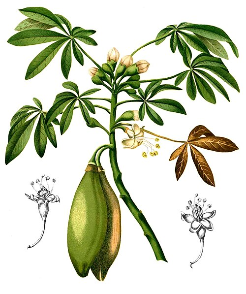
Fromagerillustration · Public domain
Ceiba pentandra Blanco2.238-cropped.jpg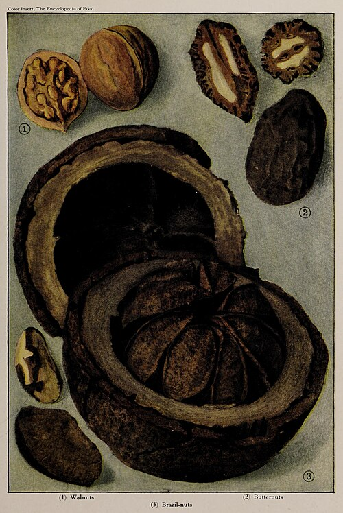
Noyer du Brésilillustration · Public domain
Nuts (1), illustration from The Encyclopedia of Food by Artemas Ward.jpg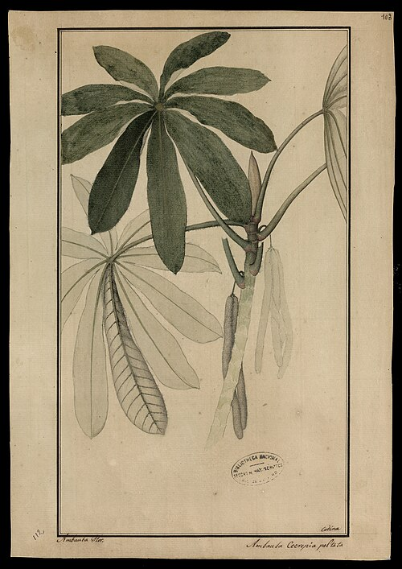
Bois canonillustration · Public domain
(Cecropia peltata, Linn.)., da Coleção Brasiliana Iconográfica.jpg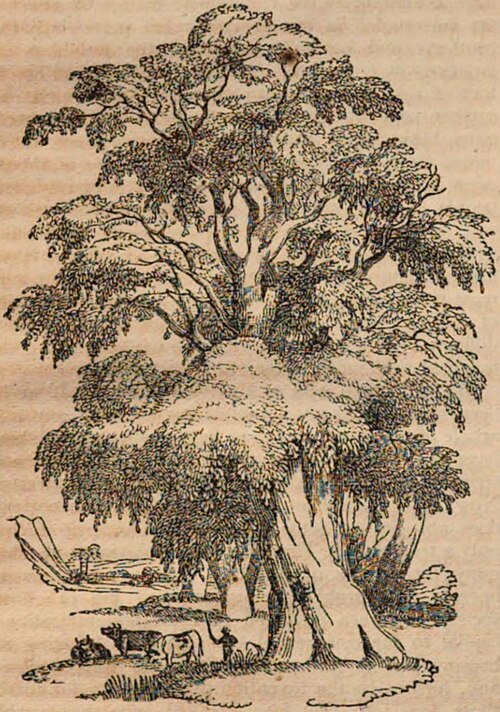
Acajouillustration · Public domain
Penny Magazine 1832 108 Mahogany Tree.jpg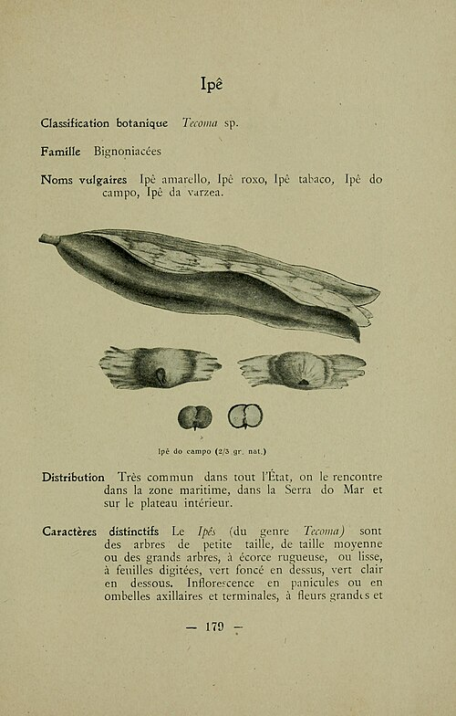
Ébène verteillustration · Public domain
Les bois indigènes de São Paulo (Page 179) BHL13035003.jpg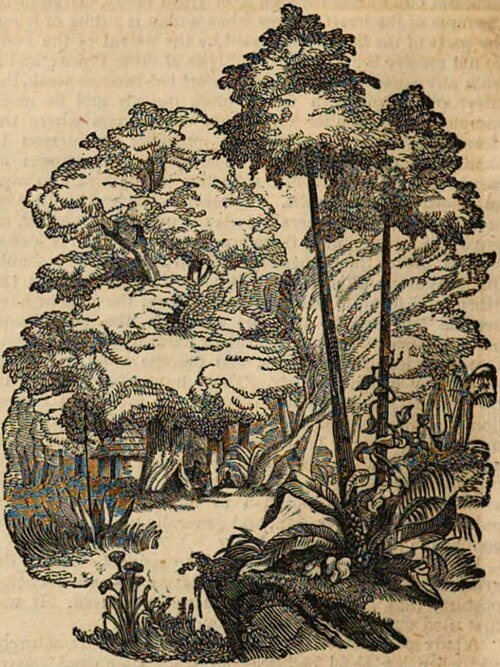
Hévéaillustration · Public domain
Penny Magazine 1832 216 Trees producing Caoutchouc.jpg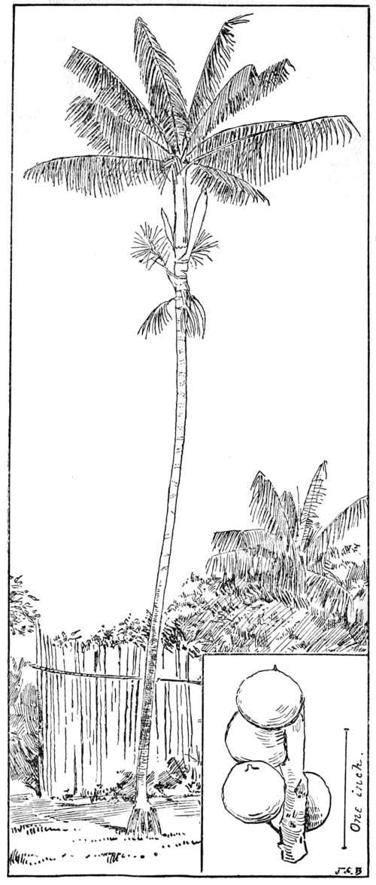
Palmier wassaïillustration · Public domain
PSM V60 D410 The assai palm euterpe oleracea.png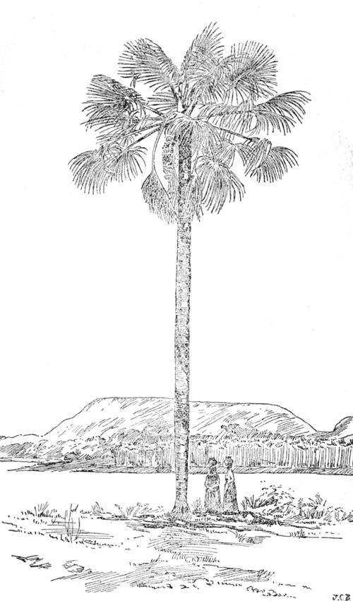
Palmier bâcheillustration · Public domain
PSM V60 D411 Mirity palm of the amazons mauritia flexuosa.png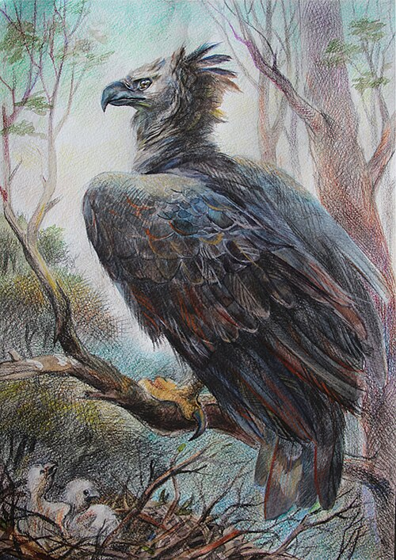
Harpie féroceillustration · CC BY-SA 3.0
The American harpy eagle - Kazartseva Ekaterina Nikolaevna.jpg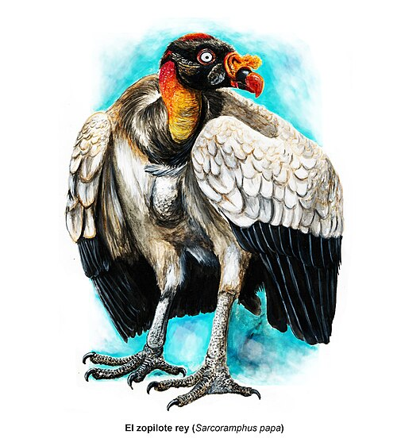
Sarcoramphe roiillustration · CC BY-SA 3.0
Zopilote rey - Pavel Galván.jpg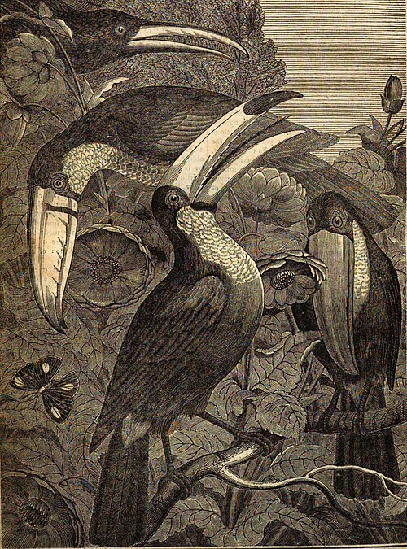
Toucan tocoillustration · Public domain
Penny Magazine 1833 193 Toucans.jpg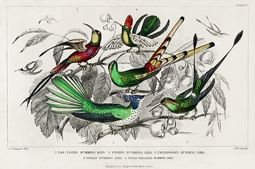
Colibri topazeillustration · CC BY-SA 4.0
Illustration from A History of the Earth and Animated Nature by Oliver Goldsmith from rawpixel’s own original edition of the publication 00061.jpg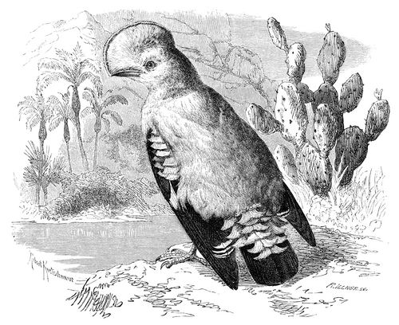
Coq-de-rocheillustration · Public domain
Menniskans härledning och könsurvalet illustration sida II-64.png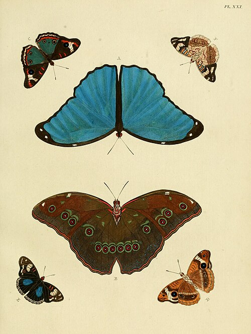
Morpho bleuillustration · Public domain
Cramer&Stoll-uitlandsche kapellen vol. 1- plate 021.jpg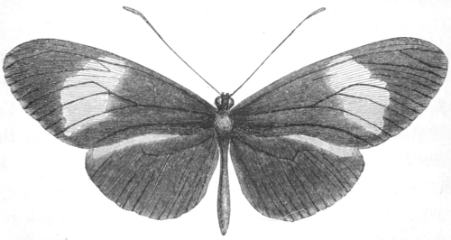
Héliconiusillustration · Public domain
Naturalist on the River Amazons figure 13.png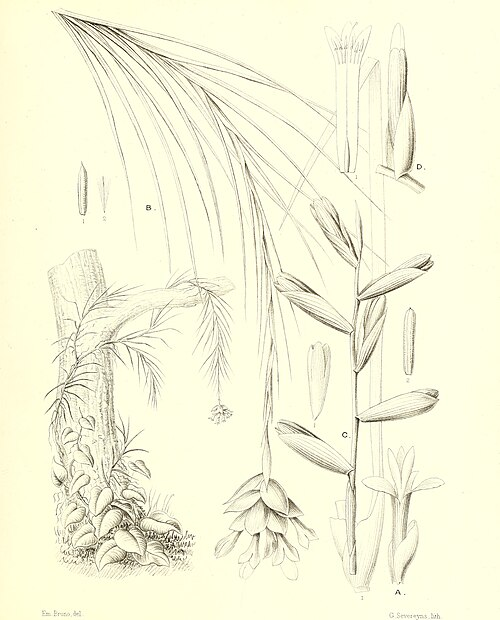
Broméliacéeillustration · No restrictions
Bromeliaceae andreanae - description et histoire des broméliacées récoltées dans la Colombie, l'Ecuador et le Venezuela (1889) (20231225858).jpg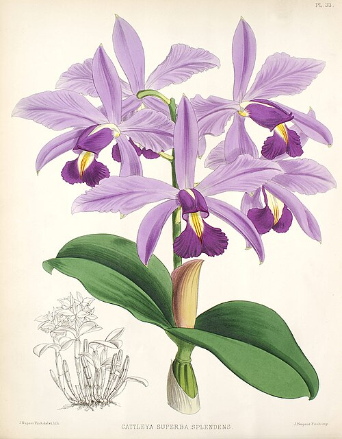
Orchidéeillustration · Public domain
Cattleya violacea1.jpg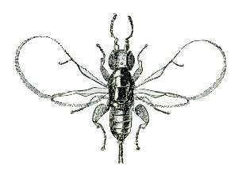
Guêpe du figuierillustration · Public domain
Blastophaga psenes.jpg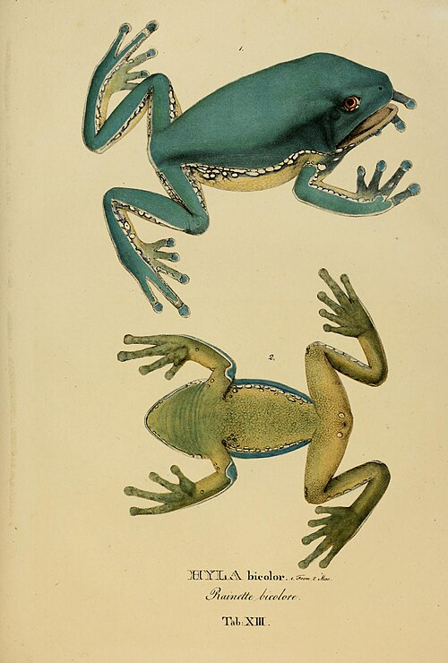
Phyllomédusaillustration · Public domain
Animalia nova sive species novae testudinum et ranarum BHL2948587.jpg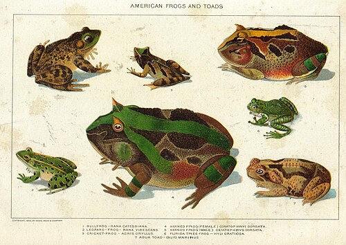
Crapaud buffleillustration · Public domain
NIEdot369.jpg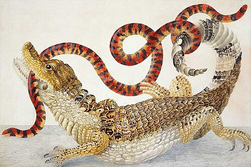
Caïman à lunettesillustration · Public domain
Illustration of a Caiman crocodilus and an Anilius scytale (1701–1705) by Maria Sibylla Merian.jpg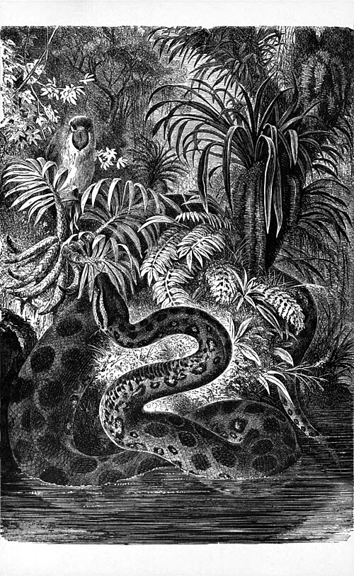
Anaconda vertillustration · Public domain
Americana 1920 Anaconda.jpg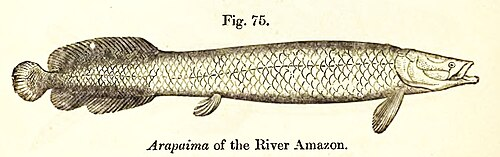
Arapaïmaillustration · Public domain
ArapaimaImg.jpg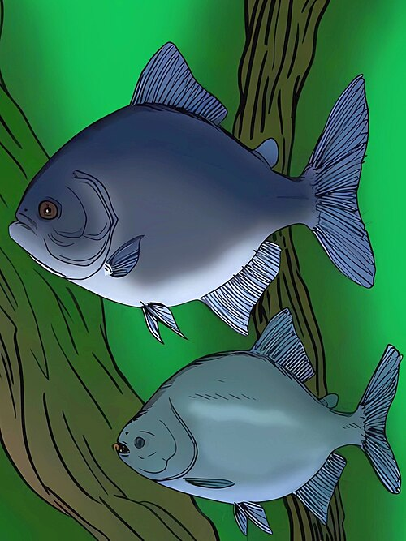
Tambaquiillustration · CC BY-SA 4.0
Megapiranha Colossoma 2.jpg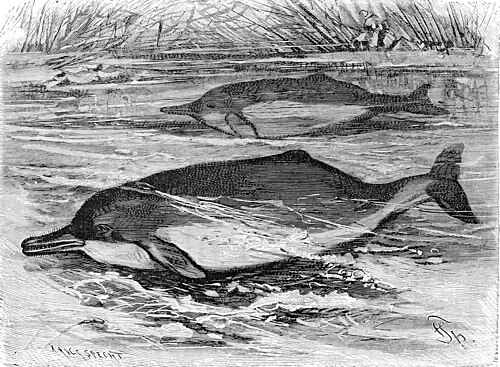
Dauphin roseillustration · CC0
Inia geoffrensis1.jpg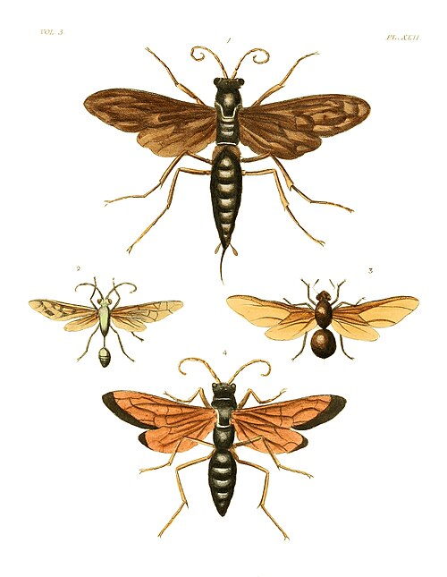
Fourmi coupe-feuilleillustration · Public domain
Illustrations of Exotic Entomology III 42.jpg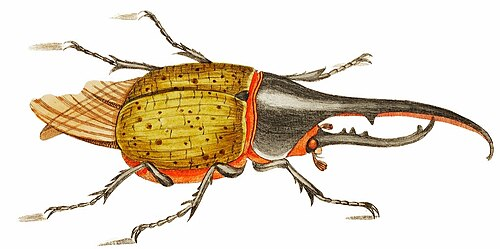
Dynaste Herculeillustration · CC BY 4.0
" Hercules beetle illustration from The Naturalist's Miscellany (1789-1813) by George Shaw (1751-1813). ".jpg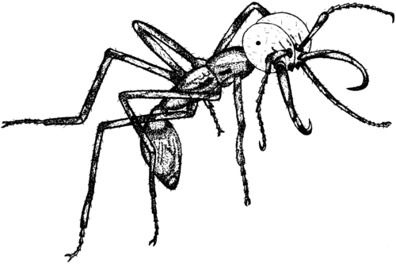
Fourmis légionnairesillustration · CC BY 2.5
Eciton burchellii Illustration.png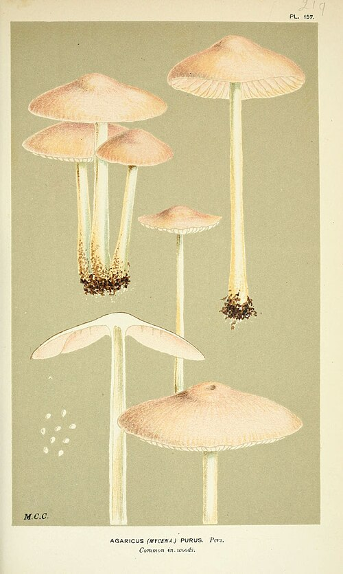
Champignon luminescentillustration · Public domain
Illustrations of British Fungi (Hymenomycetes), to serve as an atlas to the "Handbook of British Fungi" (Pl. 157) (6055669689).jpg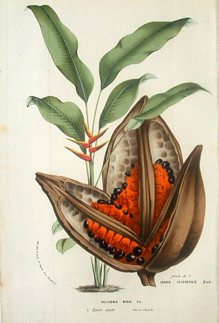
Balisierillustration · Public domain
Louis van Houtte02.jpg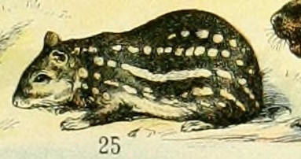
Pacaillustration · Public domain
Adolphe Millot mammiferes C paca.jpg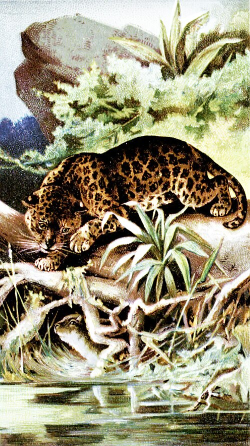
Jaguarillustration · Public domain
Natural History with Anecdotes (Miles 1895) - Jaguar illustration.jpg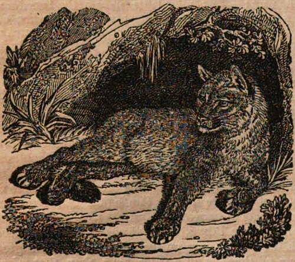
Pumaillustration · Public domain
Penny Magazine 1832 132 The Puma.jpg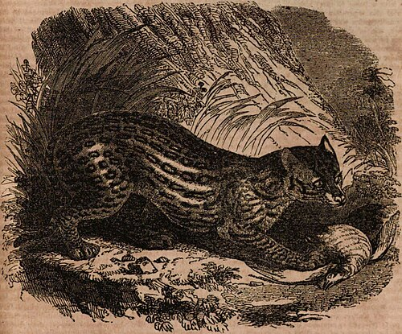
Ocelotillustration · Public domain
Penny Magazine 1836 225 The Ocelot.jpg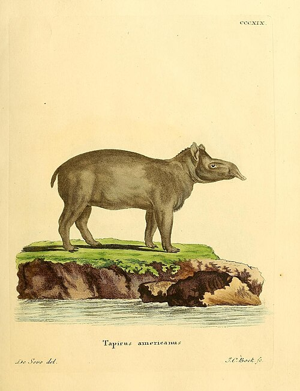
Tapir du Brésilillustration · Public domain
Die Säugthiere in Abbildungen nach der Natur, mit Beschreibungen (Plate CCCXIX) (7257717782).jpg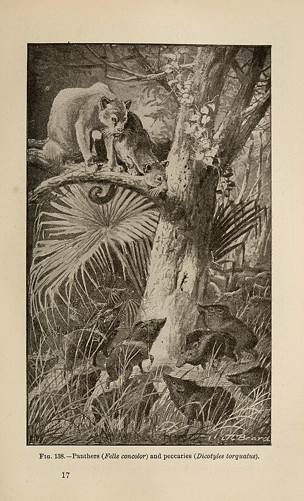
Pécari à collierillustration · No restrictions
Animal studies (1903) (17578547573).jpg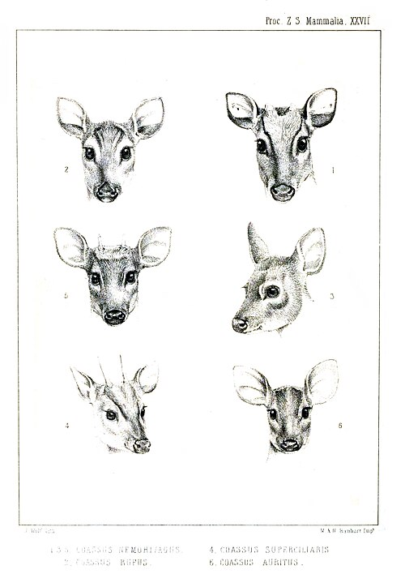
Daguet rougeillustration · Public domain
CoassusWolf.jpg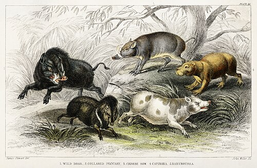
Capybaraillustration · CC BY-SA 4.0
Illustration from A History of the Earth and Animated Nature by Oliver Goldsmith from rawpixel’s own original edition of the publication 00018.jpg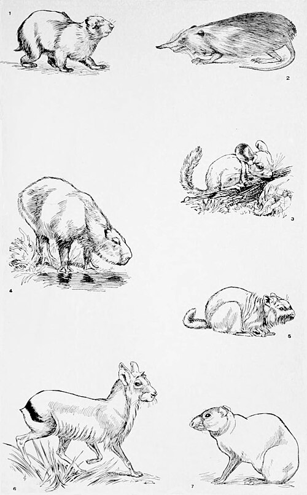
Agouti doréillustration · Public domain
NIE 1905 Cavy - Cavies etc.jpg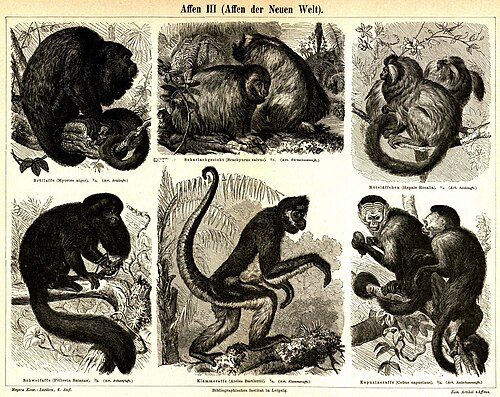
Atèle noirillustration · Public domain
Meyers b1 s0140c.jpg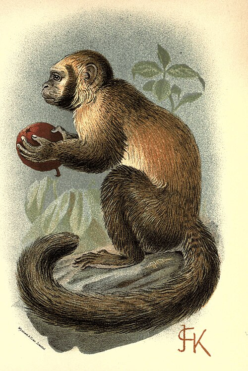
Capucinillustration · Public domain
Handbook to the Primates Plate 19.jpg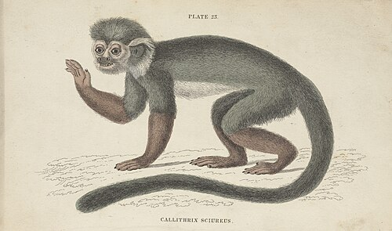
Saïmiriillustration · CC BY 4.0
An ape of the genus callithrix sciureus standing on the Wellcome L0051647.jpg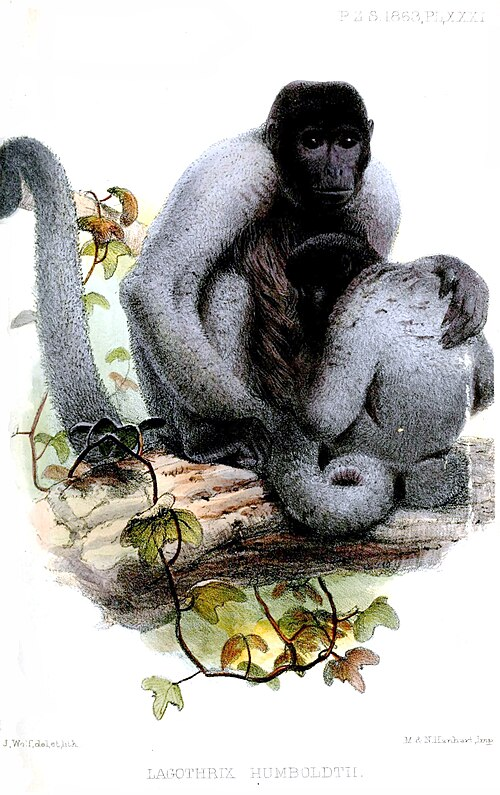
Singe laineuxillustration · Public domain
LagothrixHumboldtiiWolf.jpg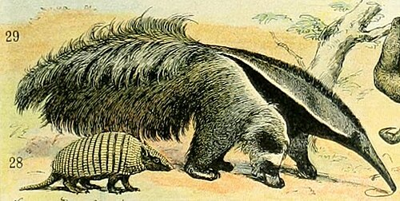
Tamanoirillustration · Public domain
Adolphe Millot mammiferes C tamanoir.jpg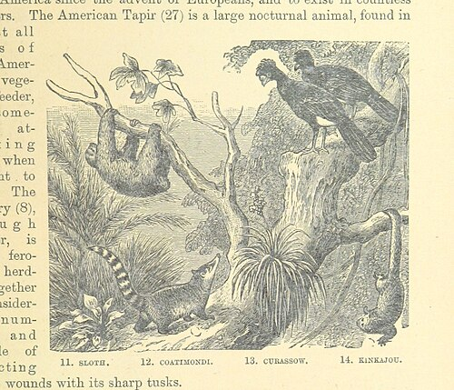
Coati rouxillustration · No restrictions
363 of 'The World's Inhabitants; or, Mankind, animals & plants ... With ... illustrations, etc' (11292612905).jpg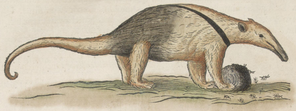
Tamanduaillustration · Public domain
Historia naturalis Brasiliae (Page 226) BHL289319.png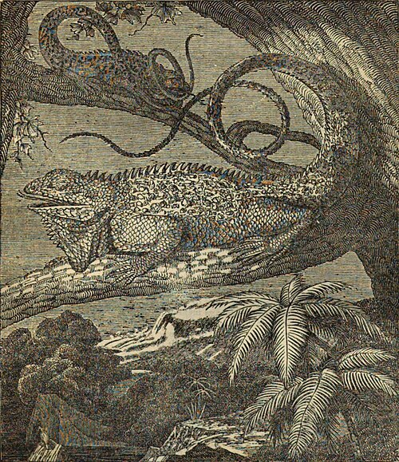
Iguane vertillustration · Public domain
Penny Magazine 1832 332 The Guana.jpg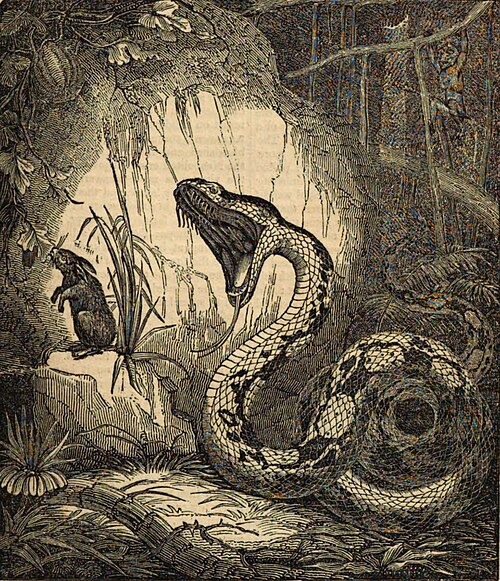
Boa constricteurillustration · Public domain
Penny Magazine 1832 289 The Boa Constrictor.jpg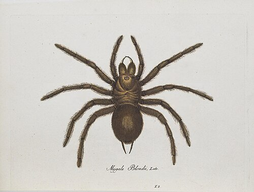
Mygale de Leblondillustration · Public domain
N32 w1150 (30885338581).jpg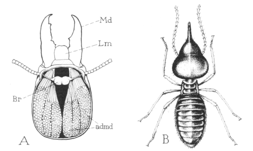
Termitesillustration · Public domain
ITWAMOL - Fig 78.pngMargayillustration · CC BY-SA 3.0
Leopardus wiedii - Tigrillo Boliviano - Joel Huanca Martinez.jpg
Coendouillustration · Public domain
Cambridge Natural History Mammalia Fig 244.jpg
Opossum communillustration · Public domain
Didelphis marsupialis Schreber.jpg
Vanillierillustration · Public domain
Vanilla, illustration from The Encyclopedia of Food by Artemas Ward.jpg
Jaguarundiillustration · Public domain
Puma yagouaroundi 1.jpg
Figuier étrangleurillustration · Public domain
Ficusindicamaxima.jpg
Cascadeillustration · No restrictions
Timehri - the journal of the Royal Agricultural and Commercial Society of British Guiana (1919) (14782144662).jpg
Hoazin huppéillustration · Public domain
EB1911 - Hoactzin.jpg
Caligoillustration · Public domain
Cramer&Stoll-uitlandsche kapellen vol. 1- plate 034.jpg
Greta otophoto · CC BY-SA 3.0
Greta_oto.jpg
Paresseux à trois doigtsillustration · Public domain
Adolphe Millot mammiferes C paresseux.jpg
Piranha rougeillustration · CC BY-SA 3.0
Pygocentrus Nattereri - Damian Soltys.jpg
Termitomycesphoto · CC BY-SA 3.0
Termitomyces_reticulatus_37340.jpg
Victoria amazonicaillustration · Public domain
Victoria regia – Walter Fitch.jpg
Loutre géanteillustration · Public domain
PteronuraSandbachiWolf.jpg
Hurleur rouxillustration · Public domain
Handbook to the Primates Plate 18.jpg
Kinkajouillustration · No restrictions
Illustration of a kinkajou on chair 1896.jpg
Tayraillustration · Public domain
Cambridge Natural History Mammalia Fig 219.jpg
Rivièrephoto · Public domain
City_of_Carauari,_the_Juruá_River_and_its_tributaries,_taken_from_the_International_Space_Station.jpg
Bras mortphoto · CC BY-SA 2.0 de
Nowitna_river.jpg
Arbre creuxillustration · Public domain
Anna Lewicka - Wśród naszych łąk i borów (1930) - strona 143.png
Terrier de bergephoto · CC BY-SA 3.0
Chipmunk-burrow_(exits).jpg
Termitièreillustration · Public domain
C. cavifrons illustrations.png
Inselbergphoto · CC BY-SA 4.0
ULURU.jpg
La crue montephoto · CC BY 2.0
Igapo.jpg
Ara rougeillustration · Public domain
Book Illustration, Illustrations of the Family of Psittacidœ, or Parrots; Macrocercus Aracanga (red and yellow macaw), 1832 (CH 68775881).jpg
Ara bleuillustration · Public domain
Houghton Typ 805L.32 (A) - Illustrations of the family of Psittacidœ, or parrots, plate 8.jpg
Ara hyacintheillustration · Public domain
Anodorhynchus leari by Edward Lear.jpg
Philodendronillustration · CC BY-SA 3.0
Imbé Philodendron byKoehne.jpg
Abeille euglossineillustration · No restrictions
Boletim do Museu Paraense de Historia Natural e Ethnographia (Museu Goeldi) (1902) (20200430019).jpg
Dendrobatephoto · CC BY-SA 3.0
Dendrobates_tinctorius_-_Karlsruhe_Zoo_05.jpg
Fourmi aztecaphoto · CC BY 4.0
Azteca_adrepens_casent0173822_profile_1.jpg
Passifloreillustration · Public domain
NIEdot346.jpg
Cigalephoto · CC BY 2.0
Cicada_-_Neotibicen_linnei,_Woodbridge,_Virginia.jpg
Lianeillustration · Public domain
Bauhinia guianensis Aublet 1775 pl 145.jpg
Contrefortphoto · CC BY-SA 3.0
Buttress_roots.JPG
Anguille électriquephoto · CC BY-SA 3.0
Electric-eel.jpg
Cordycepsphoto · CC BY 2.5
Ophiocordyceps_unilateralis.png
Tatou géantphoto · CC BY 4.0
Priodontes_maximus_at_Régina.jpg